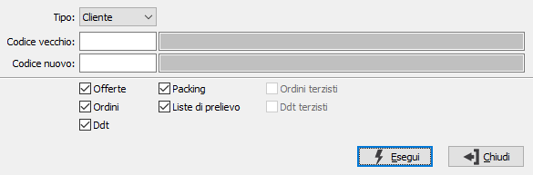

Sostituzione cliente/fornitore
La procedura consente di sostituire un codice cliente (o fornitore) con un nuovo codice (ad esempio nel caso di cambio di partita Iva).
La sostituzione avviene per i clienti su offerte da evadere, ordini da evadere, packing da evadere, liste di prelievo da evadere, Ddt da fatturare (se Ddt anche movimenti di magazzino collegati ai Ddt), anagrafica progetti; per i fornitori su offerte da evadere, ordini da evadere, Ddt da fatturare, Ordini terzisti da evadere, Ddt terzisti da fatturare (se Ddt/Ddt terzisti anche movimenti di magazzino collegati ai Ddt).
Su offerte clienti, ordini clienti, Ddt vendita, fatture di vendita e prima nota di magazzino (nel caso di movimenti clienti) è stato modificato il controllo cliente/progetto per renderlo non bloccante se il cliente intestatario è obsoleto.
